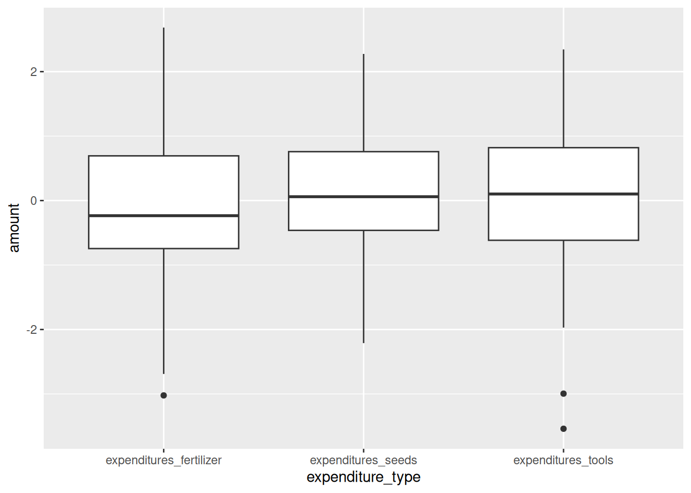

4. Data Cleaning
Data from the field never quite comes in the form you want, and the form you want your data in changes depending on what you want to do with it. So for every project, you’ll likely do a substantial amount of data wrangling.
The goal of reproducible data cleaning is that at any moment, you can re-run your code to go from raw data to outputs. This is only useful, if you organize and document your code in such a way that people unfamiliar with the project (this could be future you!) can understand and modify the code. For this, RMarkdown is great, as it contains code, results and documentation all in one place. This chapter will provide examples of common data wrangling patterns, as well as how they can fit it into a reproducible data cleaning RMarkdown file.
Make sure you have the tidyverse installed, and the SAFI data set
downloaded to your data folder by running the code from the Set-up section
The basic pattern
Below is an example R Script, with some common data wrangling tasks, organized as follows:
- Loading raw data
- Cleaning variables by topic using
dplyr, including mutating and changing factor levels. - Combine topics into one large data file
- Saving cleaned data, so it can be used in analysis scripts.
Note that objects are never overwritten:
data is loaded as raw_data,
and each topic takes its info from there, and then the cleaned variables are
saved in their own new data object.
The final clean_data is then assembled from all separate data files.
This has a number of advantages:
- It comparimentalizes your code: any cleaning you do on the conflict data will not affect the housing data. This is especially useful when running code interactively when you’re working on it, as you can run the bits out of order without causing problems.
- Your analysis data set will only contain the data you need. This makes for data files that are easier to handle, and minimizes the impact of data breaches if analyses data needs to be shared with co-authors.
Note furthermore that any filtering is done at the beginging, in the “paradata” section.
Paradata are metadata recorded during data collection (e.g., timestamps, interviewer IDs, and device logs) that document how, when, and by whom data were collected; here the paradata object serves as a central reference to which all other data are joined. By doing the filter in a specific object, near the top of your script, you make sure this is done transparently.
# loading packages
library(tidyverse)
library(here)
# loading raw data
raw_data <-
read_csv(here("data/SAFI_clean.csv"), na = "NULL")
# Paradata
paradata <-
raw_data %>%
mutate(day = day(interview_date),
month = month(interview_date),
year = year(interview_date)) %>%
filter(village == "Chirodzo") %>%
filter(interview_date > "2016-11-16" & interview_date < "2017-01-01") %>%
select(key_ID, interview_date, day, month, year, village)
# housing
housing <-
raw_data %>%
mutate(people_per_room = no_membrs / rooms,
respondent_wall_type = as_factor(respondent_wall_type),
respondent_wall_type = fct_recode(respondent_wall_type,
"Burned bricks" = "burntbricks",
"Mud Daub" = "muddaub",
"Sun bricks" = "sunbricks")) %>%
select(key_ID, no_membrs, rooms, people_per_room, respondent_wall_type)
# conflict
conflict <-
raw_data %>%
mutate(conflict_yn = case_when(affect_conflicts == "frequently" ~ 1,
affect_conflicts == "more_once" ~ 1,
affect_conflicts == "once" ~ 1,
affect_conflicts == "never" ~ 0,
.default = NA)) %>%
select(key_ID, conflict_yn)
# join data
clean_data <-
paradata %>%
left_join(housing) %>%
left_join(conflict)
# saving clean data for later use
clean_data %>% saveRDS(here("data/SAFI_cleaner.rds")) Throughout this chapter, we will add things to this sctructure, until we end up with a basic .Rmd file that is easy to work with. First we will info on how to include plots, then how to use multi-level data, and finally some advanced techniques such as editing multiple varaibles all at once.
Using plots to identify data issues reproducibly
A key part of data cleaning is identifying issues in the data.
This is often done by plotting the data,
inspecting summary statistics, or tabulating values.
In R, this is easy to do in a reproducible way using ggplot2.
For example, to identify outliers in the years_liv variable,
we can make a boxplot:

From the boxplot, we can see that there’s no super unplausible numbers. But let’s say we are worried, and want to winsorize this variable at 95%, just so that the few high values don’t affect our analysis too much.
years_liv_clean <-
raw_data %>%
select(key_ID, years_liv) %>%
mutate(years_liv = if_else(years_liv > quantile(years_liv, 0.95, na.rm = TRUE),
quantile(years_liv, 0.95, na.rm = TRUE),
years_liv))I’ve saved the cleaned variable as a new object, ready to be merged into the clean data in the final .Rmd file.
If find this to be a very useful pattern to repeat across my data cleaning scripts:
- plot data
- identify issues and outliers, and describe them in rmarkdown
- clean data
- merge cleanded data back in data
The rendered RMarkdown file will then contain the code, the plots on which decisions are made, and documentation of these descisions. This means you can share it with people who have no access to the data, and they can still assess your work.
Dealing with multiple levels of data
In many surveys, data is collected at multiple levels, for example the village, household, and individual level, with each level having its own data set. For analysis purposes these data sets often need to be merged together.
First, let’s make sure our dataset has multiple levels,
by generating some fake individual-level data,
making sure that the household roster has a number of lines
for each household that is equal to the household size, and has two
randomly generated variables: female and age.
Note that age may
be -99, which should be considered missing.
long_data <-
read_csv(here("data/SAFI_clean.csv"), na = "NULL") %>%
select(key_ID,no_membrs ) %>%
uncount(no_membrs) %>%
group_by(key_ID) %>%
mutate(member_ID = row_number()) %>%
rowwise() %>%
mutate(female = sample(0:1,1),
age = case_when(member_ID == 1 ~ sample(18:86,1),
.default = sample(c(0:86,-99),1))) %>%
ungroup()
long_data %>% glimpse()## Rows: 942
## Columns: 4
## $ key_ID <dbl> 1, 1, 1, 2, 2, 2, 2, 2, 2, 2, 3, 3, 3, 3, 3, 3, 3, 3, 3, 3, …
## $ member_ID <int> 1, 2, 3, 1, 2, 3, 4, 5, 6, 7, 1, 2, 3, 4, 5, 6, 7, 8, 9, 10,…
## $ female <int> 1, 0, 0, 0, 1, 1, 0, 0, 0, 0, 0, 1, 1, 1, 1, 0, 0, 0, 0, 0, …
## $ age <dbl> 46, 81, 46, 79, 3, 47, 25, 47, 5, 71, 41, 13, 76, 28, 68, 83…Pivoting long to wide
To merge this roster data to our household data,
we need to make sure we have one row per household.
We do this by making age and female variables for each household member (age_1, age_2, etc.),
For this, we use the pivot_wider() function (in Stata this would be called reshaping ).
wide_data <-
long_data %>%
pivot_wider(names_from = member_ID,
values_from = !ends_with("_ID"),
names_vary = "slowest")
wide_data %>% glimpse()## Rows: 131
## Columns: 39
## $ key_ID <dbl> 1, 2, 3, 4, 5, 6, 7, 8, 9, 10, 11, 12, 13, 14, 15, 16, 17, 1…
## $ female_1 <int> 1, 0, 0, 0, 1, 1, 1, 1, 0, 0, 1, 1, 1, 1, 0, 1, 1, 1, 0, 1, …
## $ age_1 <dbl> 46, 79, 41, 36, 75, 59, 19, 52, 38, 39, 40, 22, 65, 42, 74, …
## $ female_2 <int> 0, 1, 1, 0, 0, 1, 0, 0, 0, 1, 1, 0, 1, 0, 0, 1, 1, 1, 1, 0, …
## $ age_2 <dbl> 81, 3, 13, 84, 23, 4, 1, 61, 79, 22, 3, 54, 57, 4, 35, 19, 1…
## $ female_3 <int> 0, 1, 1, 1, 1, 1, 1, 0, 1, 1, 1, 1, 0, 1, 0, 1, 1, 0, 0, 0, …
## $ age_3 <dbl> 46, 47, 76, 22, 32, 10, 57, 72, 82, 27, 84, 9, 36, 80, 18, 1…
## $ female_4 <int> NA, 0, 1, 0, 0, NA, 1, 1, 1, 1, 0, 0, 0, 1, 0, 1, 0, 0, 1, 1…
## $ age_4 <dbl> NA, 25, 28, 28, 11, NA, 80, 57, 47, 22, 70, 76, 73, 45, 34, …
## $ female_5 <int> NA, 0, 1, 0, 0, NA, 1, 0, 1, 1, 0, 1, 0, 1, 0, 0, 0, NA, 0, …
## $ age_5 <dbl> NA, 47, 68, 85, 42, NA, 53, 54, 73, 17, 55, 54, 60, 82, 55, …
## $ female_6 <int> NA, 0, 0, 1, 1, NA, 1, 1, 1, 0, 0, 0, 1, 0, NA, 1, 1, NA, 1,…
## $ age_6 <dbl> NA, 5, 83, 85, 5, NA, 11, 38, 15, 65, 54, 63, 31, 64, NA, 74…
## $ female_7 <int> NA, 0, 0, 1, 0, NA, NA, 1, 1, 0, NA, 0, NA, 0, NA, NA, 0, NA…
## $ age_7 <dbl> NA, 71, 76, 21, 6, NA, NA, 57, -99, 11, NA, 60, NA, 69, NA, …
## $ female_8 <int> NA, NA, 0, NA, NA, NA, NA, 0, 1, 0, NA, NA, NA, 0, NA, NA, 0…
## $ age_8 <dbl> NA, NA, 39, NA, NA, NA, NA, 83, 70, 55, NA, NA, NA, 41, NA, …
## $ female_9 <int> NA, NA, 0, NA, NA, NA, NA, 0, NA, 1, NA, NA, NA, 0, NA, NA, …
## $ age_9 <dbl> NA, NA, 9, NA, NA, NA, NA, 56, NA, 22, NA, NA, NA, 62, NA, N…
## $ female_10 <int> NA, NA, 0, NA, NA, NA, NA, 1, NA, 1, NA, NA, NA, 1, NA, NA, …
## $ age_10 <dbl> NA, NA, 41, NA, NA, NA, NA, 58, NA, 22, NA, NA, NA, 72, NA, …
## $ female_11 <int> NA, NA, NA, NA, NA, NA, NA, 1, NA, 0, NA, NA, NA, NA, NA, NA…
## $ age_11 <dbl> NA, NA, NA, NA, NA, NA, NA, 71, NA, 7, NA, NA, NA, NA, NA, N…
## $ female_12 <int> NA, NA, NA, NA, NA, NA, NA, 1, NA, 0, NA, NA, NA, NA, NA, NA…
## $ age_12 <dbl> NA, NA, NA, NA, NA, NA, NA, 34, NA, 50, NA, NA, NA, NA, NA, …
## $ female_13 <int> NA, NA, NA, NA, NA, NA, NA, NA, NA, NA, NA, NA, NA, NA, NA, …
## $ age_13 <dbl> NA, NA, NA, NA, NA, NA, NA, NA, NA, NA, NA, NA, NA, NA, NA, …
## $ female_14 <int> NA, NA, NA, NA, NA, NA, NA, NA, NA, NA, NA, NA, NA, NA, NA, …
## $ age_14 <dbl> NA, NA, NA, NA, NA, NA, NA, NA, NA, NA, NA, NA, NA, NA, NA, …
## $ female_15 <int> NA, NA, NA, NA, NA, NA, NA, NA, NA, NA, NA, NA, NA, NA, NA, …
## $ age_15 <dbl> NA, NA, NA, NA, NA, NA, NA, NA, NA, NA, NA, NA, NA, NA, NA, …
## $ female_16 <int> NA, NA, NA, NA, NA, NA, NA, NA, NA, NA, NA, NA, NA, NA, NA, …
## $ age_16 <dbl> NA, NA, NA, NA, NA, NA, NA, NA, NA, NA, NA, NA, NA, NA, NA, …
## $ female_17 <int> NA, NA, NA, NA, NA, NA, NA, NA, NA, NA, NA, NA, NA, NA, NA, …
## $ age_17 <dbl> NA, NA, NA, NA, NA, NA, NA, NA, NA, NA, NA, NA, NA, NA, NA, …
## $ female_18 <int> NA, NA, NA, NA, NA, NA, NA, NA, NA, NA, NA, NA, NA, NA, NA, …
## $ age_18 <dbl> NA, NA, NA, NA, NA, NA, NA, NA, NA, NA, NA, NA, NA, NA, NA, …
## $ female_19 <int> NA, NA, NA, NA, NA, NA, NA, NA, NA, NA, NA, NA, NA, NA, NA, …
## $ age_19 <dbl> NA, NA, NA, NA, NA, NA, NA, NA, NA, NA, NA, NA, NA, NA, NA, …We only needed to specify three options:
- names_from: this is the column that contains the names (or often numbers)
for each of our units of analysis. In this case, the
member_ID. The values of this variable will be appended to the original variable names to create new variable names. Soagebecomesage_1,age_2, etc. - values_from: the variables containing the data. All variables you specify
here, will get one column for each possible value of names_from.
In our case, these variables
femaleandage. I used tidy select syntax to specify all variables except the ones ending in_ID. - names_vary: this controls the ordering of the variables. By default (“fastest”), R will create all age variables, and then all female variables, by specifying slowest, we ensure that first all variables for member 1 are created, then all variables for member 2, etc.
Pivoting wide to long
If we had started with wide data, and had wanted to transform to
long data, we’d have to use pivot_longer():
## Rows: 4,978
## Columns: 3
## $ key_ID <dbl> 1, 1, 1, 1, 1, 1, 1, 1, 1, 1, 1, 1, 1, 1, 1, 1, 1, 1, 1, 1, 1, …
## $ name <chr> "female_1", "age_1", "female_2", "age_2", "female_3", "age_3", …
## $ value <dbl> 1, 46, 0, 81, 0, 46, NA, NA, NA, NA, NA, NA, NA, NA, NA, NA, NA…This was easy since the syntax of pivot_longer() is the exact opposite of
pivot_wider(), but the result is pretty useless:
- The
namecolumn contains two things: a variable name and amember_ID; - The data is too long: I’d like
ageandfemaleto be two separate variables; and - There’s many empty rows: there’s an age and female row for 19 possible members for each household, but most households are smaller than that.
I could use separate_wider_delim(),
pivot_wider(), and filter(!is.na()) to address those, but that’s not elegant
at all.
I can do all of this within the pivot_longer() call by using the names_to
and names_sep options:
wide_data %>%
pivot_longer(!key_ID,
names_to = c(".value", "member_ID"),
names_sep = "_",
values_drop_na = TRUE,
names_transform = list(member_ID = as.integer))## # A tibble: 942 × 4
## key_ID member_ID female age
## <dbl> <int> <int> <dbl>
## 1 1 1 1 46
## 2 1 2 0 81
## 3 1 3 0 46
## 4 2 1 0 79
## 5 2 2 1 3
## 6 2 3 1 47
## 7 2 4 0 25
## 8 2 5 0 47
## 9 2 6 0 5
## 10 2 7 0 71
## # ℹ 932 more rowsIn this case, the syntax is a bit harder to understand. It’s good to think first
what the original data looks like, and how I intend to transform it.
The wide data has columns key_ID, age_1-19 and female_1-19.
I don’t really want to touch the key_ID column.
I want to turn the columns age_1-19 and female_1-19 into three columns:
female, age and member_ID.
This translates to the options we passed to pivot_longer() as follows:
!key_ID: We want to pivot the data that’s in all columns except key_ID.names_to = c(".value", "member_ID"): this specifies the new columns we want to create. It basically says that the existing column names consist of two parts: one part (i.e. female and age) that we wish to keep as column names of variables that will contain my values, and one part (i.e. the numbers 1-19) which should be put into a new column which we will “member_ID”.names_sep=: this indicates how the two parts mentioned above are separated. In more difficult cases, you’ll have to use thenames_patternoption. This requires some knowledge of regular expressions, so here’s two examples:- If there is no seperator (
age1,female1etc…):names_pattern = "(.*\\D)([0-9]+)$". In this regular expression,.*\\Dmatches a string of any length, of any characters, as long as it ends with something other than a digit. The[0-9]+$matches any number of digits at the end of the string. The parentheses indicate how the string should be separated to form variable names and member_ID. - If the separator is used in other places in variable names (
member_age_1etc…):names_pattern = "(.*)_([0-9]+)$".
- If there is no seperator (
values_drop_na = TRUE: tells R to drop rows that have missing data for all variables. This prevents the issue where we hadd too many rows.names_transform: by default, allnamecolumns will be character types, butmember_IDonly contains integers, so we transform it to integer. This is completely optional.
Joining (or merging) data
Tidyverse has four functions to join (or merge, as Stata calls it) two
data sets. The functions that differ in the way they treat observations that are in one data set but not the other.
Consider the diagram below.
It has two data sets, x (in Stata terms, this is the master data set) and y (the using
data set in Stata terms). They have overlapping rows (area B), but also
rows that are only in x (area A) or only in y (area C).

The four join functions work as follows:
inner_join(x,y)will only keep area B.left_join(x,y)will keep areas A and B.right_join(x,y)will keep areas B and C.full_join(x,y)will keep areas A, B, and C.
There’s also filtering joins:
- `semi_join(x,y)` will only keep area B, but won't add columns to X
- `anti_join(x,y)`, will only keep area A, and won't add columns to X.In our case, the data sets match perfectly, i.e. we only have an area B,
so there is no practical difference between the four regular joins.
I chose left_join() so the number of
observations in my household survey is guaranteed to remain the same.
To merge the roster to the household data, we use the join_by function:
## Rows: 131 Columns: 14
## ── Column specification ────────────────────────────────────────────────────────
## Delimiter: ","
## chr (7): village, respondent_wall_type, memb_assoc, affect_conflicts, items...
## dbl (6): key_ID, no_membrs, years_liv, rooms, liv_count, no_meals
## dttm (1): interview_date
##
## ℹ Use `spec()` to retrieve the full column specification for this data.
## ℹ Specify the column types or set `show_col_types = FALSE` to quiet this message.
## Joining with `by = join_by(key_ID)`## # A tibble: 131 × 52
## key_ID village interview_date no_membrs years_liv respondent_wall_type
## <dbl> <chr> <dttm> <dbl> <dbl> <chr>
## 1 1 God 2016-11-17 00:00:00 3 4 muddaub
## 2 2 God 2016-11-17 00:00:00 7 9 muddaub
## 3 3 God 2016-11-17 00:00:00 10 15 burntbricks
## 4 4 God 2016-11-17 00:00:00 7 6 burntbricks
## 5 5 God 2016-11-17 00:00:00 7 40 burntbricks
## 6 6 God 2016-11-17 00:00:00 3 3 muddaub
## 7 7 God 2016-11-17 00:00:00 6 38 muddaub
## 8 8 Chirodzo 2016-11-16 00:00:00 12 70 burntbricks
## 9 9 Chirodzo 2016-11-16 00:00:00 8 6 burntbricks
## 10 10 Chirodzo 2016-12-16 00:00:00 12 23 burntbricks
## # ℹ 121 more rows
## # ℹ 46 more variables: rooms <dbl>, memb_assoc <chr>, affect_conflicts <chr>,
## # liv_count <dbl>, items_owned <chr>, no_meals <dbl>, months_lack_food <chr>,
## # instanceID <chr>, female_1 <int>, age_1 <dbl>, female_2 <int>, age_2 <dbl>,
## # female_3 <int>, age_3 <dbl>, female_4 <int>, age_4 <dbl>, female_5 <int>,
## # age_5 <dbl>, female_6 <int>, age_6 <dbl>, female_7 <int>, age_7 <dbl>,
## # female_8 <int>, age_8 <dbl>, female_9 <int>, age_9 <dbl>, …Note that we didn’t specify identifiers, like we would in Stata. R
assumed that the variables that appear in both data frames are the
identifiers, in this case key_ID. Use the by option to change this.
Going the other way around, joining the household data to the roster data, is equally easy:
long_data %>%
left_join(
read_csv(here("data/SAFI_clean.csv"), na = "NULL") %>%
select(key_ID, village, interview_date)
)## Rows: 131 Columns: 14
## ── Column specification ────────────────────────────────────────────────────────
## Delimiter: ","
## chr (7): village, respondent_wall_type, memb_assoc, affect_conflicts, items...
## dbl (6): key_ID, no_membrs, years_liv, rooms, liv_count, no_meals
## dttm (1): interview_date
##
## ℹ Use `spec()` to retrieve the full column specification for this data.
## ℹ Specify the column types or set `show_col_types = FALSE` to quiet this message.
## Joining with `by = join_by(key_ID)`## # A tibble: 942 × 6
## key_ID member_ID female age village interview_date
## <dbl> <int> <int> <dbl> <chr> <dttm>
## 1 1 1 1 46 God 2016-11-17 00:00:00
## 2 1 2 0 81 God 2016-11-17 00:00:00
## 3 1 3 0 46 God 2016-11-17 00:00:00
## 4 2 1 0 79 God 2016-11-17 00:00:00
## 5 2 2 1 3 God 2016-11-17 00:00:00
## 6 2 3 1 47 God 2016-11-17 00:00:00
## 7 2 4 0 25 God 2016-11-17 00:00:00
## 8 2 5 0 47 God 2016-11-17 00:00:00
## 9 2 6 0 5 God 2016-11-17 00:00:00
## 10 2 7 0 71 God 2016-11-17 00:00:00
## # ℹ 932 more rowsNote that here I only merged in two variables,
by using select and a pipe within the left_join() function.
Summarizing over groups (or collapsing data)
Another way to transform individual-level data to household-level data is to compute summary statistics (sums, counts, means etc.).
For this, we use the group_by() and summarize() functions.
For example,
to compute the household size, number of women and average age in each household.
But before doing anything, I make sure the -99s in the age variable are treated
as missing, using a simple mutate() to conver them to NA.
long_data %>%
group_by(key_ID) %>%
mutate(age = if_else(age == -99, NA, age)) %>%
summarize(
hh_size = n(),
num_women = sum(female),
mean_age = mean(age, na.rm = TRUE)
)## # A tibble: 131 × 4
## key_ID hh_size num_women mean_age
## <dbl> <int> <int> <dbl>
## 1 1 3 1 57.7
## 2 2 7 2 39.6
## 3 3 10 4 47.4
## 4 4 7 3 51.6
## 5 5 7 3 27.7
## 6 6 3 3 24.3
## 7 7 6 5 36.8
## 8 8 12 7 57.8
## 9 9 8 6 57.7
## 10 10 12 6 29.9
## # ℹ 121 more rowsEditing many variables at once
Often, you’ll to do the same operation to many variables. For example, recoding missing values. While you can copy paste the code for each variable, this may lead to errors (if you forget to change the variable name somewhere), and is tedious to maintain (if you need to change something later on. So, it’s better to do this in a programmatic way. Here’s some pointers:
across(): doing the same operations on multiple variables using across
The main function to do this is across(), which is used within mutate() or summarize().
For example, we need to make sure we update -99 to NA in all age_ variables
in our wide data.
We could write this:
wide_data %>%
mutate(age_1 = if_else(age_1 == -99,NA,age_1),
age_2 = if_else(age_2 == -99,NA,age_2),
age_3 = if_else(age_3 == -99,NA,age_3),
age_4 = if_else(age_4 == -99,NA,age_4),
age_5 = if_else(age_5 == -99,NA,age_5),
age_6 = if_else(age_6 == -99,NA,age_6),
age_7 = if_else(age_7 == -99,NA,age_7),
age_8 = if_else(age_8 == -99,NA,age_8),
age_9 = if_else(age_9 == -99,NA,age_9),
age_10 = if_else(age_10 == -99,NA,age_10),
age_11 = if_else(age_11 == -99,NA,age_11),
age_12 = if_else(age_12 == -99,NA,age_12),
age_13 = if_else(age_13 == -99,NA,age_13),
age_14 = if_else(age_14 == -99,NA,age_14),
age_15 = if_else(age_15 == -99,NA,age_15),
age_16 = if_else(age_16 == -99,NA,age_16),
age_17 = if_else(age_17 == -99,NA,age_17),
age_18 = if_else(age_18 == -99,NA,age_18),
age_19 = if_else(age_19 == -99,NA,age_19)
)## # A tibble: 131 × 39
## key_ID female_1 age_1 female_2 age_2 female_3 age_3 female_4 age_4 female_5
## <dbl> <int> <dbl> <int> <dbl> <int> <dbl> <int> <dbl> <int>
## 1 1 1 46 0 81 0 46 NA NA NA
## 2 2 0 79 1 3 1 47 0 25 0
## 3 3 0 41 1 13 1 76 1 28 1
## 4 4 0 36 0 84 1 22 0 28 0
## 5 5 1 75 0 23 1 32 0 11 0
## 6 6 1 59 1 4 1 10 NA NA NA
## 7 7 1 19 0 1 1 57 1 80 1
## 8 8 1 52 0 61 0 72 1 57 0
## 9 9 0 38 0 79 1 82 1 47 1
## 10 10 0 39 1 22 1 27 1 22 1
## # ℹ 121 more rows
## # ℹ 29 more variables: age_5 <dbl>, female_6 <int>, age_6 <dbl>,
## # female_7 <int>, age_7 <dbl>, female_8 <int>, age_8 <dbl>, female_9 <int>,
## # age_9 <dbl>, female_10 <int>, age_10 <dbl>, female_11 <int>, age_11 <dbl>,
## # female_12 <int>, age_12 <dbl>, female_13 <int>, age_13 <dbl>,
## # female_14 <int>, age_14 <dbl>, female_15 <int>, age_15 <dbl>,
## # female_16 <int>, age_16 <dbl>, female_17 <int>, age_17 <dbl>, …However, this is extremely tedious and error-prone (though AI makes this easier nowadays!), and makes your code unreusable, as it depends on the highest number of members in your data set to be exactly 19. If you have households with 20 members, or no household with more than 10, you’d have to change this code.
Instead, I use the across() function, which takes two arguments: a column specifcation
(for which I use tidy select
syntax), and a function. It will then apply the function to all columns:
cleanmissing <- function(x) {
if_else(x == -99, NA, x)
}
wide_data %>%
mutate(across(.cols = starts_with("age_"),
.fns = cleanmissing))## # A tibble: 131 × 39
## key_ID female_1 age_1 female_2 age_2 female_3 age_3 female_4 age_4 female_5
## <dbl> <int> <dbl> <int> <dbl> <int> <dbl> <int> <dbl> <int>
## 1 1 1 46 0 81 0 46 NA NA NA
## 2 2 0 79 1 3 1 47 0 25 0
## 3 3 0 41 1 13 1 76 1 28 1
## 4 4 0 36 0 84 1 22 0 28 0
## 5 5 1 75 0 23 1 32 0 11 0
## 6 6 1 59 1 4 1 10 NA NA NA
## 7 7 1 19 0 1 1 57 1 80 1
## 8 8 1 52 0 61 0 72 1 57 0
## 9 9 0 38 0 79 1 82 1 47 1
## 10 10 0 39 1 22 1 27 1 22 1
## # ℹ 121 more rows
## # ℹ 29 more variables: age_5 <dbl>, female_6 <int>, age_6 <dbl>,
## # female_7 <int>, age_7 <dbl>, female_8 <int>, age_8 <dbl>, female_9 <int>,
## # age_9 <dbl>, female_10 <int>, age_10 <dbl>, female_11 <int>, age_11 <dbl>,
## # female_12 <int>, age_12 <dbl>, female_13 <int>, age_13 <dbl>,
## # female_14 <int>, age_14 <dbl>, female_15 <int>, age_15 <dbl>,
## # female_16 <int>, age_16 <dbl>, female_17 <int>, age_17 <dbl>, …We can have variables for 100 household members, and this code will still work! Notes:
- You can use
across(.cols = where(is.numeric), .fn = ...)to apply a function to all numeric variables. - You can also combine
across()withsummarize()to summarize multiple variables more easily. See the section on faceting for an example.
You can also define the function in line, if you don’t plan on using the function anywhere else:
wide_data %>%
mutate(across(.cols = starts_with("age_"),
.fns = function(var) if_else(var == -99,NA, var)))## # A tibble: 131 × 39
## key_ID female_1 age_1 female_2 age_2 female_3 age_3 female_4 age_4 female_5
## <dbl> <int> <dbl> <int> <dbl> <int> <dbl> <int> <dbl> <int>
## 1 1 1 46 0 81 0 46 NA NA NA
## 2 2 0 79 1 3 1 47 0 25 0
## 3 3 0 41 1 13 1 76 1 28 1
## 4 4 0 36 0 84 1 22 0 28 0
## 5 5 1 75 0 23 1 32 0 11 0
## 6 6 1 59 1 4 1 10 NA NA NA
## 7 7 1 19 0 1 1 57 1 80 1
## 8 8 1 52 0 61 0 72 1 57 0
## 9 9 0 38 0 79 1 82 1 47 1
## 10 10 0 39 1 22 1 27 1 22 1
## # ℹ 121 more rows
## # ℹ 29 more variables: age_5 <dbl>, female_6 <int>, age_6 <dbl>,
## # female_7 <int>, age_7 <dbl>, female_8 <int>, age_8 <dbl>, female_9 <int>,
## # age_9 <dbl>, female_10 <int>, age_10 <dbl>, female_11 <int>, age_11 <dbl>,
## # female_12 <int>, age_12 <dbl>, female_13 <int>, age_13 <dbl>,
## # female_14 <int>, age_14 <dbl>, female_15 <int>, age_15 <dbl>,
## # female_16 <int>, age_16 <dbl>, female_17 <int>, age_17 <dbl>, …Note that throughout this page, I will use different ways of defining these inline functions. They all work, so pick what you like and be consistent.
Converting all yes/no factors to dummies
Sometimes you want nicely labelled factors, but sometimes need dummies. Here’s one way to convert factors to dummies.
First, create a fake dataset using the fantastic fabricatr package:
library(fabricatr
library(tidyverse)
# define some parameters, so we can easily change the size of the dataset
num_vars <- 10
num_obs <- 200
factor_data <-
# i make long data first, so I only need to make one factor var
fabricate(
N = num_obs * num_vars,
n = 1:N,
key_ID = ceiling(n/num_vars),
var = rep(1:num_vars, N/num_vars),
value = as_factor(sample(c("yes", "no"),N, replace = TRUE))
) %>%
# and then turn it to wide to create num_var factor variables
pivot_wider(
id_cols = key_ID,
names_from = var,
values_from = value,
names_glue = "factor_{var}"
)
factor_data %>% glimpse()## Error in parse(text = input): <text>:2:1: unexpected symbol
## 1: library(fabricatr
## 2: library
## ^Then we need to select all columns that solely consist of “yes” and “no” values,
and convert them to 1s and 0s.
The where function can do this,
by using setequal() to compare the levels of factors to the vector c("yes","no"):
factor_data %>%
mutate(key_ID = as.character(key_ID)) %>%
mutate(
across(
where(~setequal(levels(.x), c("yes", "no"))),
~as.integer(.x == "yes")
)
) %>%
mutate(across(
where(~setequal(unique(.x), 0:1)),
~factor(.x, levels = c(0, 1), labels = c("no", "yes"))
))## Error: object 'factor_data' not found## Error in glimpse.default(): argument "x" is missing, with no defaultYou can reverse this by using where(~setequal(unique(.x), 0:1))
to select all variables that consist solely of 0s and 1s,
and then use factor() to convert them to factors with labels “no” and “yes”.
Pivoting
Of course, in the example above,
it would have been possible to pivot the data to long first,
so that we have one age variable, and no need to use across.
wide_data %>%
pivot_longer(
!key_ID,
names_to = c(".value", "member_ID"),
names_sep = "_",
values_drop_na = TRUE,
names_transform = list(member_ID = as.integer)
) %>%
mutate(age = if_else(age == -99,NA,age)) %>%
pivot_wider(names_from = member_ID,
values_from = !ends_with("_ID"),
names_vary = "slowest") ## # A tibble: 131 × 39
## key_ID female_1 age_1 female_2 age_2 female_3 age_3 female_4 age_4 female_5
## <dbl> <int> <dbl> <int> <dbl> <int> <dbl> <int> <dbl> <int>
## 1 1 1 46 0 81 0 46 NA NA NA
## 2 2 0 79 1 3 1 47 0 25 0
## 3 3 0 41 1 13 1 76 1 28 1
## 4 4 0 36 0 84 1 22 0 28 0
## 5 5 1 75 0 23 1 32 0 11 0
## 6 6 1 59 1 4 1 10 NA NA NA
## 7 7 1 19 0 1 1 57 1 80 1
## 8 8 1 52 0 61 0 72 1 57 0
## 9 9 0 38 0 79 1 82 1 47 1
## 10 10 0 39 1 22 1 27 1 22 1
## # ℹ 121 more rows
## # ℹ 29 more variables: age_5 <dbl>, female_6 <int>, age_6 <dbl>,
## # female_7 <int>, age_7 <dbl>, female_8 <int>, age_8 <dbl>, female_9 <int>,
## # age_9 <dbl>, female_10 <int>, age_10 <dbl>, female_11 <int>, age_11 <dbl>,
## # female_12 <int>, age_12 <dbl>, female_13 <int>, age_13 <dbl>,
## # female_14 <int>, age_14 <dbl>, female_15 <int>, age_15 <dbl>,
## # female_16 <int>, age_16 <dbl>, female_17 <int>, age_17 <dbl>, …This is a bit more work, but often more flexible, and the more operations you need to do, the more worthwhile it is to pivot to long first.
The pivoting approach can also be useful even if you don’t really have another level of analysis, but just repeated questions. Let’s say we have a bunch of related variables, such as expenditures on inputs:
expenditures_raw <-
wide_data %>%
select(key_ID) %>%
# generate some repeated questions
mutate(expenditures_fertilizer = rnorm(n = nrow(.)),
expenditures_seeds = rnorm(n = nrow(.)),
expenditures_tools = rnorm(n = nrow(.))) These variabes all contain the same type of information, and should be dealth with in the same way.
We could plot and clean each variable separately,
or even in a loop,
but by pivoting we can do it one go,
since ggplot2 expects long data.
expenditures_long <-
expenditures_raw %>%
#pivot
pivot_longer(cols = starts_with("expenditures_"),
names_to = "expenditure_type",
values_to = "amount")
expenditures_long %>%
ggplot(aes(x = expenditure_type, y = amount)) +
geom_boxplot()
We now have one plot that we can look at, and one variable to clean.
Following the pattern of plotting, documenting and cleaning,
we notice negative values of expenditures here.
That’s not possible, so I set them to 0
(though in the real world I’d have to argue why not NA),
and pivot back to wide:
expenditures_cleaned <-
expenditures_long %>%
mutate(amount = if_else(amount < 0, 0, amount)) %>%
pivot_wider(names_from = expenditure_type,
values_from = amount)Now you have a dataframe with a bunch of variables, ready to be merged in with the rest.
Using many variables as inputs
Suppose we wanted to use many variables as input for a calculation.
For example to
get the household size, number of women and average age from our wide data.
The easiest, and probably best, way to do this in R is by reshaping to long,
and then use summarize, like we did above.
But in Stata you would probably use some sort of
egen function, so that may come natural.
To compute means and sums across rows in R, use rowSums() and rowMeans():
wide_data %>%
mutate(across(.cols = starts_with("age_"),
.fn = ~if_else(.x == -99,NA,.x))) %>%
mutate(mean_age = rowMeans(across(starts_with("age_")),
na.rm=TRUE),
num_women = rowSums(across(starts_with("female_")),
na.rm=TRUE),
hh_size = rowSums(!is.na(across(starts_with("female_"))))) %>%
select(key_ID,hh_size,num_women, mean_age) %>%
ungroup()## # A tibble: 131 × 4
## key_ID hh_size num_women mean_age
## <dbl> <dbl> <dbl> <dbl>
## 1 1 3 1 57.7
## 2 2 7 2 39.6
## 3 3 10 4 47.4
## 4 4 7 3 51.6
## 5 5 7 3 27.7
## 6 6 3 3 24.3
## 7 7 6 5 36.8
## 8 8 12 7 57.8
## 9 9 8 6 57.7
## 10 10 12 6 29.9
## # ℹ 121 more rowsIf you want to compute something other than means or sums,
you can use rowwise() andc_across()
to get a bunch of variables into any function you want:
wide_data %>%
mutate(across(.cols = starts_with("age_"),
.fn = ~if_else(.x == -99,NA,.x))) %>%
rowwise() %>%
mutate(max_age = max(c_across(starts_with("age_")),
na.rm=TRUE),
sd_age = sd(c_across(starts_with("age_")),
na.rm=TRUE)) %>%
select(key_ID,max_age,sd_age) %>%
ungroup()## # A tibble: 131 × 3
## key_ID max_age sd_age
## <dbl> <dbl> <dbl>
## 1 1 81 20.2
## 2 2 79 30.0
## 3 3 83 26.9
## 4 4 85 31.3
## 5 5 75 25.0
## 6 6 59 30.2
## 7 7 80 31.0
## 8 8 83 13.6
## 9 9 82 25.0
## 10 10 65 18.2
## # ℹ 121 more rowsrowwise() ensures all summaries are computed per row, and c_across()
allows you to use tidy select syntax within any function.
Do note that while this is very flexible, it can be EXTREMELY slow, as all computations are done row by row. If you have a large dataset, it’s probably faster to pivot the data to long first.
Renaming many variables
While the pivoting option we discussed above is great, it does assume your variable names make sense. This is not always the case, so sometimes you need to rename a bunch of variables:
One way is to use a named list:
# this follows the pattern new_name = old_name
newnames <- c("no_livestock" = "liv_count",
"no_rooms" = "rooms",
"affect_conflicts" = "ffect_conflicts")
read_csv(here("data/SAFI_clean.csv"), na = "NULL") %>%
rename(any_of(newnames)) %>%
glimpse()## Rows: 131
## Columns: 14
## $ key_ID <dbl> 1, 2, 3, 4, 5, 6, 7, 8, 9, 10, 11, 12, 13, 14, 15…
## $ village <chr> "God", "God", "God", "God", "God", "God", "God", …
## $ interview_date <dttm> 2016-11-17, 2016-11-17, 2016-11-17, 2016-11-17, …
## $ no_membrs <dbl> 3, 7, 10, 7, 7, 3, 6, 12, 8, 12, 6, 7, 6, 10, 5, …
## $ years_liv <dbl> 4, 9, 15, 6, 40, 3, 38, 70, 6, 23, 20, 20, 8, 20,…
## $ respondent_wall_type <chr> "muddaub", "muddaub", "burntbricks", "burntbricks…
## $ no_rooms <dbl> 1, 1, 1, 1, 1, 1, 1, 3, 1, 5, 1, 3, 1, 3, 2, 1, 1…
## $ memb_assoc <chr> NA, "yes", NA, NA, NA, NA, "no", "yes", "no", "no…
## $ affect_conflicts <chr> NA, "once", NA, NA, NA, NA, "never", "never", "ne…
## $ no_livestock <dbl> 1, 3, 1, 2, 4, 1, 1, 2, 3, 2, 2, 2, 3, 3, 3, 4, 1…
## $ items_owned <chr> "bicycle;television;solar_panel;table", "cow_cart…
## $ no_meals <dbl> 2, 2, 2, 2, 2, 2, 3, 2, 3, 3, 2, 3, 2, 3, 2, 3, 2…
## $ months_lack_food <chr> "Jan", "Jan;Sept;Oct;Nov;Dec", "Jan;Feb;Mar;Oct;N…
## $ instanceID <chr> "uuid:ec241f2c-0609-46ed-b5e8-fe575f6cefef", "uui…Note that "affect_conflicts" = "ffect_conflicts" didn’t do anything,
as there is no ffect_conflicts variable.
any_of() just ignored any variables not present in the data.
This can be useful in data pipelines using multiple files,
where some files have mistyped variable names.
What if we want to do the same thing to many variables? For example, turning them all to uppercase?
We could use newnames = c(KEY_ID = key_ID, VILLAGE = village)
etc. etc.,
but that’d be extremely tedious.
Instead, there is rename_with(), which takes two arugments:
.fn: A function that takes the variable names of your dataset as an argument..cols: a tidy select statement defining which columns to change. Defaults to all columns.
This is what it’d look like:
## Rows: 131
## Columns: 14
## $ KEY_ID <dbl> 1, 2, 3, 4, 5, 6, 7, 8, 9, 10, 11, 12, 13, 14, 15…
## $ VILLAGE <chr> "God", "God", "God", "God", "God", "God", "God", …
## $ INTERVIEW_DATE <dttm> 2016-11-17, 2016-11-17, 2016-11-17, 2016-11-17, …
## $ NO_MEMBRS <dbl> 3, 7, 10, 7, 7, 3, 6, 12, 8, 12, 6, 7, 6, 10, 5, …
## $ YEARS_LIV <dbl> 4, 9, 15, 6, 40, 3, 38, 70, 6, 23, 20, 20, 8, 20,…
## $ RESPONDENT_WALL_TYPE <chr> "muddaub", "muddaub", "burntbricks", "burntbricks…
## $ ROOMS <dbl> 1, 1, 1, 1, 1, 1, 1, 3, 1, 5, 1, 3, 1, 3, 2, 1, 1…
## $ MEMB_ASSOC <chr> NA, "yes", NA, NA, NA, NA, "no", "yes", "no", "no…
## $ AFFECT_CONFLICTS <chr> NA, "once", NA, NA, NA, NA, "never", "never", "ne…
## $ LIV_COUNT <dbl> 1, 3, 1, 2, 4, 1, 1, 2, 3, 2, 2, 2, 3, 3, 3, 4, 1…
## $ ITEMS_OWNED <chr> "bicycle;television;solar_panel;table", "cow_cart…
## $ NO_MEALS <dbl> 2, 2, 2, 2, 2, 2, 3, 2, 3, 3, 2, 3, 2, 3, 2, 3, 2…
## $ MONTHS_LACK_FOOD <chr> "Jan", "Jan;Sept;Oct;Nov;Dec", "Jan;Feb;Mar;Oct;N…
## $ INSTANCEID <chr> "uuid:ec241f2c-0609-46ed-b5e8-fe575f6cefef", "uui…The variables names are used as the argument to toupper(),
which returns them in upper case.
But what if we need to provide more arguments?
Let’s say we want to append _0 to all columns,
except the ID columns,
to indicate this is baseline data.
We use paste0() which takes two arguments,
the variable name and string we wish to append:
read_csv(here("data/SAFI_clean.csv"), na = "NULL") %>%
rename_with(.fn = ~paste0(.x, "_0"), .cols = !key_ID) %>%
glimpse()## Rows: 131
## Columns: 14
## $ key_ID <dbl> 1, 2, 3, 4, 5, 6, 7, 8, 9, 10, 11, 12, 13, 14, …
## $ village_0 <chr> "God", "God", "God", "God", "God", "God", "God"…
## $ interview_date_0 <dttm> 2016-11-17, 2016-11-17, 2016-11-17, 2016-11-17…
## $ no_membrs_0 <dbl> 3, 7, 10, 7, 7, 3, 6, 12, 8, 12, 6, 7, 6, 10, 5…
## $ years_liv_0 <dbl> 4, 9, 15, 6, 40, 3, 38, 70, 6, 23, 20, 20, 8, 2…
## $ respondent_wall_type_0 <chr> "muddaub", "muddaub", "burntbricks", "burntbric…
## $ rooms_0 <dbl> 1, 1, 1, 1, 1, 1, 1, 3, 1, 5, 1, 3, 1, 3, 2, 1,…
## $ memb_assoc_0 <chr> NA, "yes", NA, NA, NA, NA, "no", "yes", "no", "…
## $ affect_conflicts_0 <chr> NA, "once", NA, NA, NA, NA, "never", "never", "…
## $ liv_count_0 <dbl> 1, 3, 1, 2, 4, 1, 1, 2, 3, 2, 2, 2, 3, 3, 3, 4,…
## $ items_owned_0 <chr> "bicycle;television;solar_panel;table", "cow_ca…
## $ no_meals_0 <dbl> 2, 2, 2, 2, 2, 2, 3, 2, 3, 3, 2, 3, 2, 3, 2, 3,…
## $ months_lack_food_0 <chr> "Jan", "Jan;Sept;Oct;Nov;Dec", "Jan;Feb;Mar;Oct…
## $ instanceID_0 <chr> "uuid:ec241f2c-0609-46ed-b5e8-fe575f6cefef", "u…In this case, we specify the function as a
a purrr-style inline anonymous function
(i.e. preceded by a ~), and we supply the variable names as .x.
(This all works the same as across() above.)
Now, let’s replace all instances of membrs or memb in variable names with
members (so no_membrs becomes no_members,
and memb_assoc becomes members_assoc.
For this I will use gsub(),
which takes three arguments:
- A pattern (expressed as a regular expression) to look for;
- a replacement for all matches of the pattern; and,
- the data to look in (in this case the varaible names).
read_csv(here("data/SAFI_clean.csv"), na = "NULL") %>%
rename_with(.fn = ~gsub("membrs|memb", "members",.x)) %>%
glimpse()## Rows: 131
## Columns: 14
## $ key_ID <dbl> 1, 2, 3, 4, 5, 6, 7, 8, 9, 10, 11, 12, 13, 14, 15…
## $ village <chr> "God", "God", "God", "God", "God", "God", "God", …
## $ interview_date <dttm> 2016-11-17, 2016-11-17, 2016-11-17, 2016-11-17, …
## $ no_members <dbl> 3, 7, 10, 7, 7, 3, 6, 12, 8, 12, 6, 7, 6, 10, 5, …
## $ years_liv <dbl> 4, 9, 15, 6, 40, 3, 38, 70, 6, 23, 20, 20, 8, 20,…
## $ respondent_wall_type <chr> "muddaub", "muddaub", "burntbricks", "burntbricks…
## $ rooms <dbl> 1, 1, 1, 1, 1, 1, 1, 3, 1, 5, 1, 3, 1, 3, 2, 1, 1…
## $ members_assoc <chr> NA, "yes", NA, NA, NA, NA, "no", "yes", "no", "no…
## $ affect_conflicts <chr> NA, "once", NA, NA, NA, NA, "never", "never", "ne…
## $ liv_count <dbl> 1, 3, 1, 2, 4, 1, 1, 2, 3, 2, 2, 2, 3, 3, 3, 4, 1…
## $ items_owned <chr> "bicycle;television;solar_panel;table", "cow_cart…
## $ no_meals <dbl> 2, 2, 2, 2, 2, 2, 3, 2, 3, 3, 2, 3, 2, 3, 2, 3, 2…
## $ months_lack_food <chr> "Jan", "Jan;Sept;Oct;Nov;Dec", "Jan;Feb;Mar;Oct;N…
## $ instanceID <chr> "uuid:ec241f2c-0609-46ed-b5e8-fe575f6cefef", "uui…Splitting multi-response variable into dummies
The SAFI data contains a number of columns that contain all responses selected
in a multiple response questions. For example, the variables items_owned can
contain something like "bicycle;television;solar_panel;table". We want to
split this into dummies: one for each possible answers. There’s a number of
ways to do this, but the most convenient is using separate_longer()
read_csv(here("data/SAFI_clean.csv"), na = "NULL") %>%
separate_longer_delim(items_owned, delim = ";") %>%
mutate(value = 1) %>%
pivot_wider(names_from = items_owned,
values_from = value,
names_glue = "owns_{items_owned}",
values_fill = 0) %>%
left_join(
read_csv(here("data/SAFI_clean.csv"), na = "NULL") %>%
select(key_ID,items_owned)) %>%
select(items_owned, starts_with("owns_")
) %>%
head()## # A tibble: 6 × 19
## items_owned owns_bicycle owns_television owns_solar_panel owns_table
## <chr> <dbl> <dbl> <dbl> <dbl>
## 1 bicycle;television;s… 1 1 1 1
## 2 cow_cart;bicycle;rad… 1 0 1 1
## 3 solar_torch 0 0 0 0
## 4 bicycle;radio;cow_pl… 1 0 1 0
## 5 motorcyle;radio;cow_… 0 0 0 0
## 6 <NA> 0 0 0 0
## # ℹ 14 more variables: owns_cow_cart <dbl>, owns_radio <dbl>,
## # owns_cow_plough <dbl>, owns_solar_torch <dbl>, owns_mobile_phone <dbl>,
## # owns_motorcyle <dbl>, owns_NA <dbl>, owns_fridge <dbl>,
## # owns_electricity <dbl>, owns_sofa_set <dbl>, owns_lorry <dbl>,
## # owns_sterio <dbl>, owns_computer <dbl>, owns_car <dbl>Note that the original items_owned variable is lost during the separate_longer_delim()
step, so I used left_join() to merge it back in for demonstration purposes.
Structure of a cleaning Rmarkdown doc with multi-level data
Putting it all together in one script, would look something like this. The rendered document can be shared more freely than the data, and includes everything to explain what happens to the data, including figures. This makes it much more insightful to share this document than the raw cleaning code.
---
title: "Example Data Cleaning RMarkdown"
output: html_document
---
# introduction
This is an example of a data cleaning RMarkdown script for multi-level data
(household and individual level).
It takes the raw data files in the data/raw folder,
and outputs a cleaned data file in the data/cleaned folder.
The cleaned dataset is ready to be used in analyses.
This script uses the the tidyverse and here packages.
Packages are managed with renv,
so details on package versions can be found in the lock file.
# loading libraries
```{r}
library(tidyverse)
library(here)
```
# loading raw data
```{r}
raw_data_hh <-
read_csv(here("data/raw/SAFI_clean.csv"), na = "NULL")
raw_data_individual <- read_csv(here("data/raw/SAFI_roster.csv"), na = "NULL")
```
# data cleaning
## paradata
We create a data object with all the IDs that we need for our anaylsis.
We only include observations from the village Chirodzo,
and interviews done between November 16th 2016 and January 1st 2017,
for reasons that really should be explained here:
```{r}
paradata <-
raw_data_hh %>%
mutate(day = day(interview_date),
month = month(interview_date),
year = year(interview_date)) %>%
filter(village == "Chirodzo") %>%
filter(interview_date > "2016-11-16" & interview_date < "2017-01-01") %>%
select(key_ID, interview_date, day, month, year, village)
```
## housing
We compute people per room, and recode wall type:
```{r}
housing <-
raw_data_hh %>%
mutate(
people_per_room = no_membrs / rooms,
respondent_wall_type = as_factor(respondent_wall_type),
respondent_wall_type = fct_recode(
respondent_wall_type,
"Burned bricks" = "burntbricks",
"Mud Daub" = "muddaub",
"Sun bricks" = "sunbricks"
)
) %>%
select(key_ID, no_membrs, rooms, people_per_room, respondent_wall_type)
```
## years_liv
We plot years_live to check if there are outliers:
```{r}
# years_liv cleaning
raw_data_hh%>%
ggplot(aes(x = years_liv)) +
geom_boxplot()
```
Anything higher than 90 years seems unlikely, so we set those to NA:
```{r}
years_liv_clean <-
raw_data_hh %>%
select(key_ID, years_liv) %>%
mutate(years_liv = if_else(years_liv > 90, NA, years_liv))
```
## items_owned
We generate dummies based on the seet items_owned variable:
```{r}
items_owned <-
raw_data_hh %>%
select(key_ID, items_owned) %>%
filter(!is.na(items_owned)) %>% # non-answers are considered missing
separate_longer_delim(items_owned, delim = ";") %>%
mutate(value = 1) %>%
pivot_wider(names_from = items_owned,
values_from = value,
names_glue = "owns_{items_owned}",
values_fill = 0) %>%
select(key_ID, starts_with("owns_"))
```
Note that we set non-answers to missing by filtering them out
(leading to NAs in the final merged dataset),
because we assume this is because the questions is skipped, but we can't be sure
(this is why there should always be a 'none' option in such questions!).
## househod roster
We reshape the household roster to wide format:
```{r}
# individual level
clean_data_individual <-
raw_data_individual %>%
mutate(age = if_else(age == -99,NA,age)) %>%
pivot_wider(names_from = member_ID,
values_from = !ends_with("_ID"),
names_vary = "slowest")
```
And we compute some summary statistics at the household level:
```{r}
household_size <-
raw_data_individual %>%
group_by(key_ID) %>%
mutate(age = if_else(age == -99,NA,age)) %>%
summarize(hh_size = n(), num_women = sum(female), mean_age = mean(age, na.rm = TRUE))
```
## conflict
```{r}
conflict <-
raw_data_hh %>%
mutate(conflict_yn = case_when(affect_conflicts == "frequently" ~ 1,
affect_conflicts == "more_once" ~ 1,
affect_conflicts == "once" ~ 1,
affect_conflicts == "never" ~ 0,
.default = NA)) %>%
select(key_ID, conflict_yn)
```
# join and save
We join all clenaed ojects together,
and save it in the clean data folder:
```{r}
clean_data <-
paradata %>%
left_join(housing) %>%
left_join(years_liv_clean) %>%
left_join(clean_data_individual) %>%
left_join(household_size) %>%
left_join(items_owned) %>%
left_join(conflict)
# saving clean data for later use
clean_data %>% saveRDS(here("data/clean/SAFI_cleaner.rds"))
```